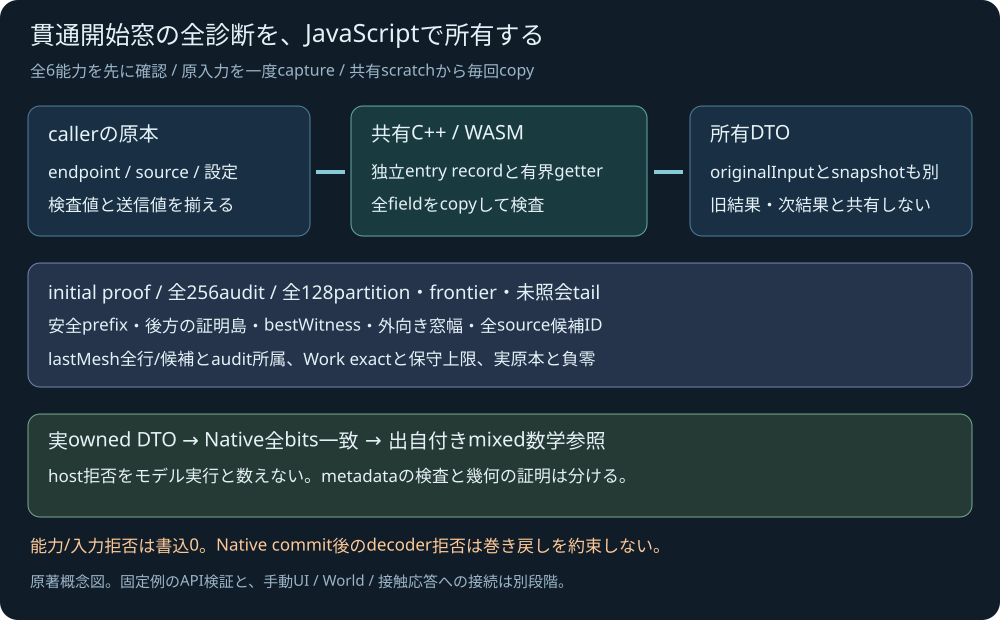

OWNED ENTRY WINDOW / FIXED INPUT PROOF
貫通開始窓の全診断を、
実WASMから所有する。
既受入Nativeの固定例を公開JavaScript APIへ渡します。初期の正証拠・closed安全prefix・負witness・外向き窓幅と全partitionを、そのまま保存対象へ表示します。
parameterは無次元です。単一根・厳密な物理時刻・接触応答・ゲーム接触を計算する画面ではありません。入力編集ラボは後続です。
共有SDKの準備中。HTTP/HTTPS配信が必要です。
固定原入力の完全JSON
返された窓と先行証拠
未実行
所有した全結果
省略しない全原本・audit・partition/tail・lastMeshと負零を表示します。画面のscrollは保存内容を削りません。
未実行
